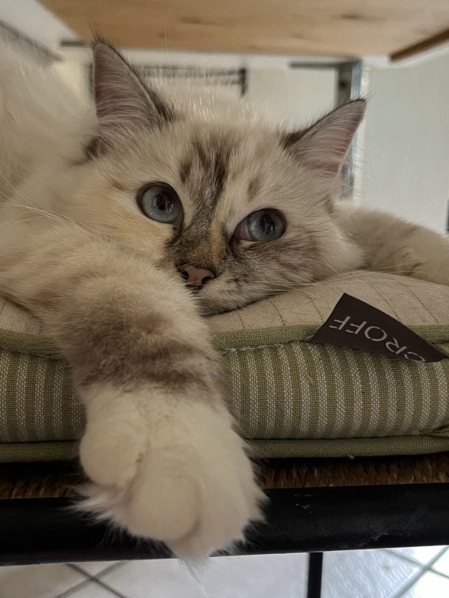
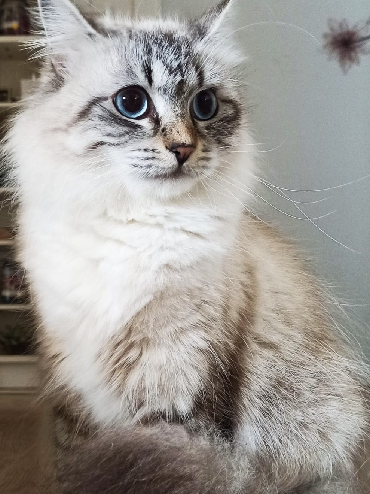
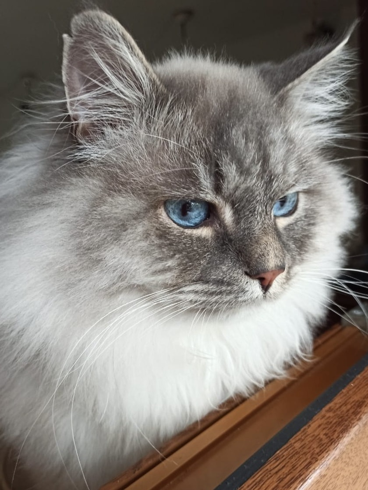
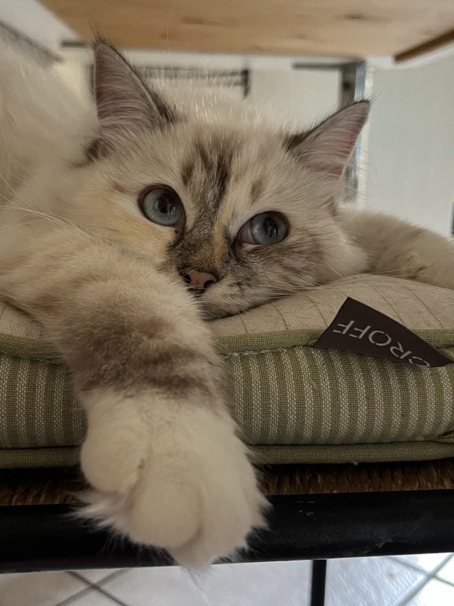
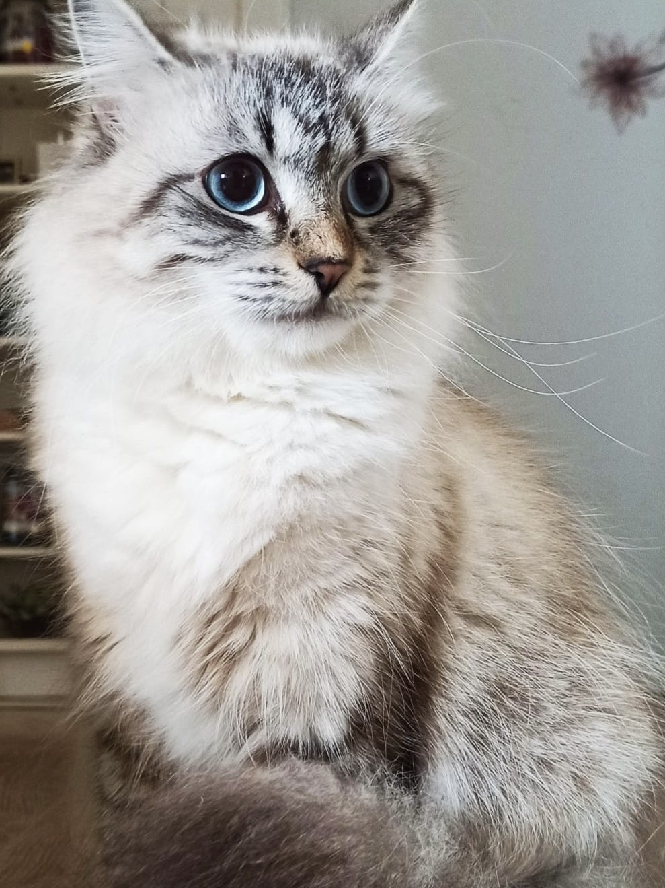
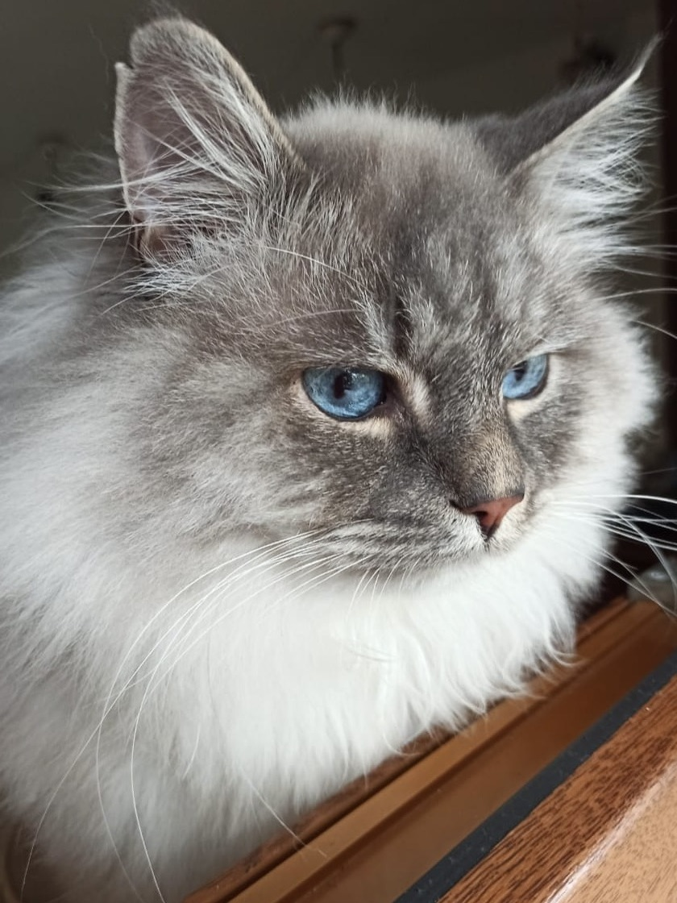

di Gatti Siberiani


 






Chi Sono

Benvenuti nel mondo di "A-mici di Chiara", dove i gatti Siberiani sono al centro di tutto.
Mi chiamo Chiara e sono un'appassionata amante del mondo animale, ma i miei gatti Siberiani sono il mio mondo.
Da oltre due anni mi dedico con amore e dedizione all'allevamento di questa straordinaria razza, che ho imparato a conoscere grazie alla mia prima gatta, Princy.
L'esperienza con lei mi ha insegnato l'importanza di un ambiente sereno e familiare per lo sviluppo equilibrato dei cuccioli.
I miei gatti vivono con me, liberi di esplorare e interagire, il che favorisce il loro temperamento docile e affettuoso.
"A-mici di Chiara" non è solo un allevamento, è una famiglia dove i cuccioli crescono felici, pronti per portare gioia e compagnia nelle nuove case.
Offro supporto continuo con foto, video e risposte a tutte le vostre domande, sia prima che dopo l'adozione.
Per me, la qualità e il benessere dei miei gatti sono prioritari, motivo per cui non produco cucciolate su richiesta ma con attenzione e cura.
Se cercate un compagno affettuoso e socievole, adatto sia ai bambini che agli adulti, i miei gatti Siberiani vi aspettano.